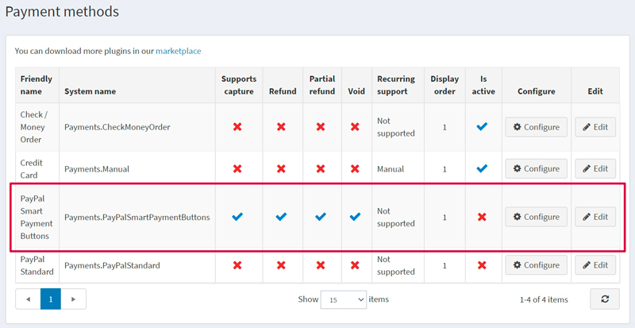
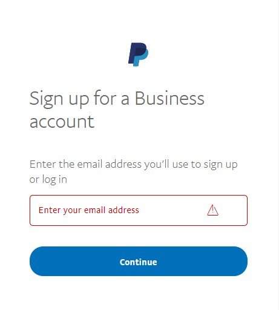
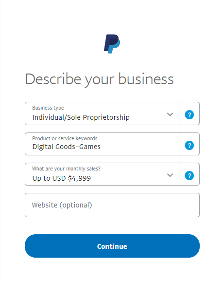
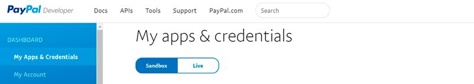
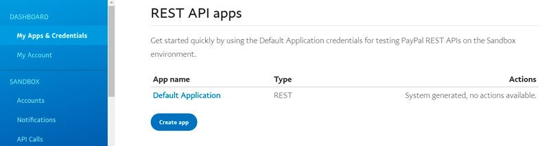
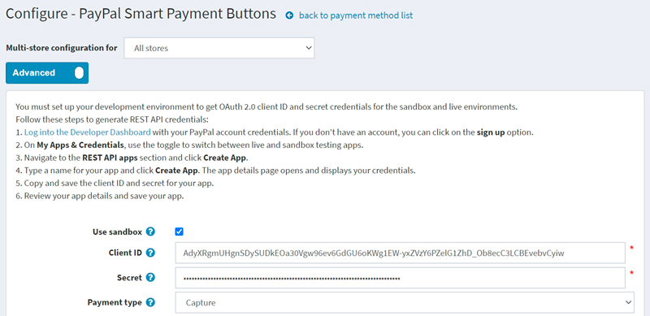
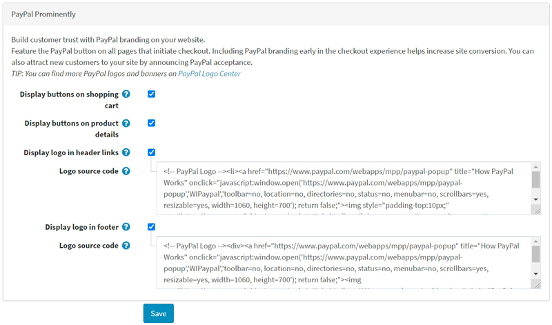
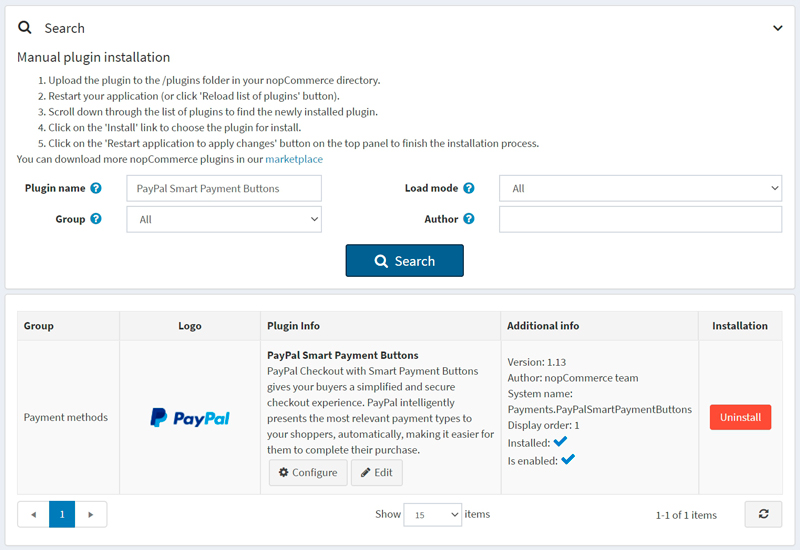
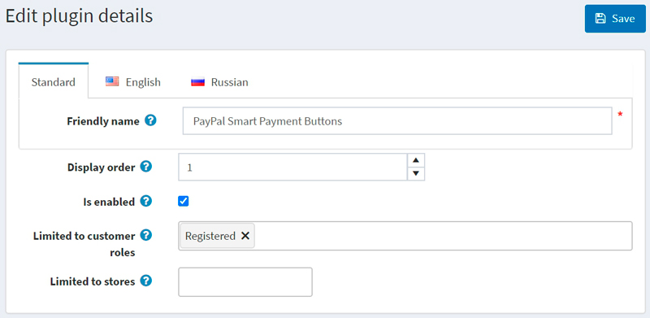

PayPal Smart Payment Buttons
Important
此此外掛目前已棄用，並已由 PayPal Commerce 外掛所取代。
透過 Smart Payment Buttons 進行的 PayPal Checkout 可為您的買家提供簡化且安全的結帳體驗。PayPal 會自動為您的顧客呈現最合適的付款方式，讓他們能更輕鬆地使用各種方式完成購買，例如 Pay with Venmo、PayPal Credit、信用卡付款、iDEAL、Bancontact、Sofort 以及其他付款類型。
影片教學
觀看此 影片教學 以學習如何設定 PayPal Smart Payment Buttons。
設定付款方式
若要設定 PayPal Smart Payment Buttons 外掛，請前往 設定 → 付款方式。接著在付款方式清單中找到 PayPal Smart Payment Buttons 付款方式：

請依照下列步驟設定 PayPal Smart Payment Buttons：
1. 啟用付款方式
若要執行此操作，請在付款方式列表頁面中，點擊該外掛列的 編輯 (Edit) 按鈕。勾選 啟用 (Is active) 核取方塊來啟用此外掛。點擊 更新 (Update) 按鈕，您的變更即會儲存。
2. 建立 PayPal 帳戶
如果您已經擁有 PayPal 帳戶，請直接前往 下一節。
請在 PayPal 上註冊一個企業帳戶。接著填寫關於您個人及企業的相關資訊：

Note
如果您已有帳戶，系統將會重新導向至授權頁面。



3. 設定 PayPal 開發者控制台
使用您的 PayPal 帳號憑證登入 Developer Dashboard。
在 My Apps & Credentials 中，使用切換開關在正式環境（live）與沙盒測試環境（sandbox）的應用程式之間進行切換。

前往 REST API apps 區塊並點擊 Create App。

輸入您的應用程式名稱並點擊 Create App。接著會開啟應用程式詳細資料頁面，並顯示您的憑證資訊。
複製並儲存您應用程式的 Client ID 與 Secret。
檢查您的應用程式詳細資料，若有任何變更，請務必儲存。
4. 在 nopCommerce 中設定付款方式
在 設定 → 付款方式 頁面中找到 PayPal Smart Payment Buttons 付款方式，並點擊 設定。隨後將顯示 設定 - PayPal Smart Payment Buttons 頁面，如下所示：

在 設定 - PayPal Smart Payment Buttons 頁面中定義以下設定：
- 若您想先測試此付款方式，請勾選 使用沙盒 (Use sandbox)。
- 輸入您在前幾個步驟中儲存的 用戶端 ID (Client ID)。
- 輸入您在前幾個步驟中儲存的 密鑰 (Secret)。
- 選擇 付款類型 (Payment type)，以決定是要立即請款，還是在訂單建立後進行授權。
接著前往 PayPal 顯著位置 (PayPal Prominently) 面板：

在此面板上定義顯示設定：
勾選 在購物車顯示按鈕 (Display buttons on shopping cart) 核取方塊，以便在購物車頁面顯示 PayPal 按鈕，取代預設的結帳按鈕。
勾選 在商品詳細頁顯示按鈕 (Display buttons on product details)，以便在商品詳細頁面顯示 PayPal 按鈕；點擊這些按鈕的效果與預設的「加入購物車」按鈕行為相同。
勾選 在頁首連結顯示標誌 (Display logo in header links) 核取方塊，以便在頁首連結中顯示 PayPal 標誌。這些標誌和橫幅是讓買家了解您選擇 PayPal 安全處理付款的絕佳方式。
- 若勾選上述核取方塊，將會顯示 標誌原始碼 (Logo source code) 欄位。請在此欄位中輸入標誌的原始碼。您可以在 PayPal Logo Center 找到更多標誌和橫幅。您也可以修改程式碼以使其正確契合您的佈景主題與網站風格。
勾選 在頁尾顯示標誌 (Display logo in footer) 核取方塊，以便在頁尾顯示 PayPal 標誌。這些標誌和橫幅是讓買家了解您選擇 PayPal 安全處理付款的絕佳方式。
- 若勾選上述核取方塊，將會顯示 標誌原始碼 (Logo source code) 欄位。請在此欄位中輸入標誌的原始碼。您可以在 PayPal Logo Center 找到更多標誌和橫幅。您也可以修改程式碼以使其正確契合您的佈景主題與網站風格。
點擊 儲存 以儲存外掛設定。
限制商店與顧客角色
您可以將任何付款方式限制在特定的商店與顧客角色中。這表示該付款方式將僅適用於特定的商店或顧客角色。您可以從外掛清單頁面執行此操作。
前往 設定 → 本地外掛。找到您想要限制的外掛。以本例來說，它是 PayPal Smart Payment Buttons。若要更快找到它，請使用頁面上方的搜尋面板，並透過付款方式選項，以 外掛名稱 或 群組 進行搜尋。

按一下 編輯 按鈕，系統將會顯示如下的編輯外掛詳細資料視窗：

您可以設定下列限制：
在 限制顧客角色 欄位中，選擇一個或多個顧客角色（例如：管理員、供應商、訪客），這些角色將能夠使用此外掛。如果您不需要此選項，只需將此欄位留空即可。
Important
為了使用此功能，您必須停用下列設定：目錄設定 → 忽略 ACL 規則 (全站)。閱讀更多關於存取控制清單 (ACL) 的說明 here。
使用 限制商店 選項可將此外掛限制在特定的商店。如果您有多個商店，請從清單中選擇一個或多個。如果您不使用此選項，只需將此欄位留空即可。
Important
為了使用此功能，您必須停用下列設定：目錄設定 → 忽略「依商店限制」規則 (全站)。閱讀更多關於多商店功能的說明 here。
按一下 儲存。